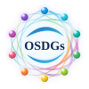

<!doctype html><html lang="zh-CN"><meta charset="utf-8"><title>OSDGs 开源发展目标 · 动态母版</title><meta name="viewport" content="width=device-width, initial-scale=1"><style>body{margin:0;background:#f6faff;color:#102950;font:16px/1.6 Arial,sans-serif}main{max-width:1100px;margin:auto;padding:42px 22px}h1{font-size:32px}section{margin:30px 0}.marks{display:grid;grid-template-columns:1fr 1fr;gap:20px}.mark{border-radius:15px;background:white;padding:20px;text-align:center}.mark.dark{background:#082b68;color:white}.mark img{width:70%;max-width:330px}.cards{display:grid;grid-template-columns:1fr 1fr;gap:16px}.cards img{width:100%}footer{border-top:1px solid #cadcea;padding:25px 0;color:#566f85}@media(max-width:600px){.marks,.cards{grid-template-columns:1fr}}</style><main><h1>OSDGs · 开源发展目标</h1><p>动态母版 v2.0.0 · 2026-11-06 已批准基线</p><section class="marks"><div class="mark"><p>Hero / 浅底</p></div><div class="mark dark"><p>Hero / 深底</p></div></section><h2>十个观察维度</h2><section class="cards"></section><footer>四项发展目标、十个观察维度与六章各有职责。本页仅预览视觉资产，不是新的统计或认证体系。</footer></main></html>